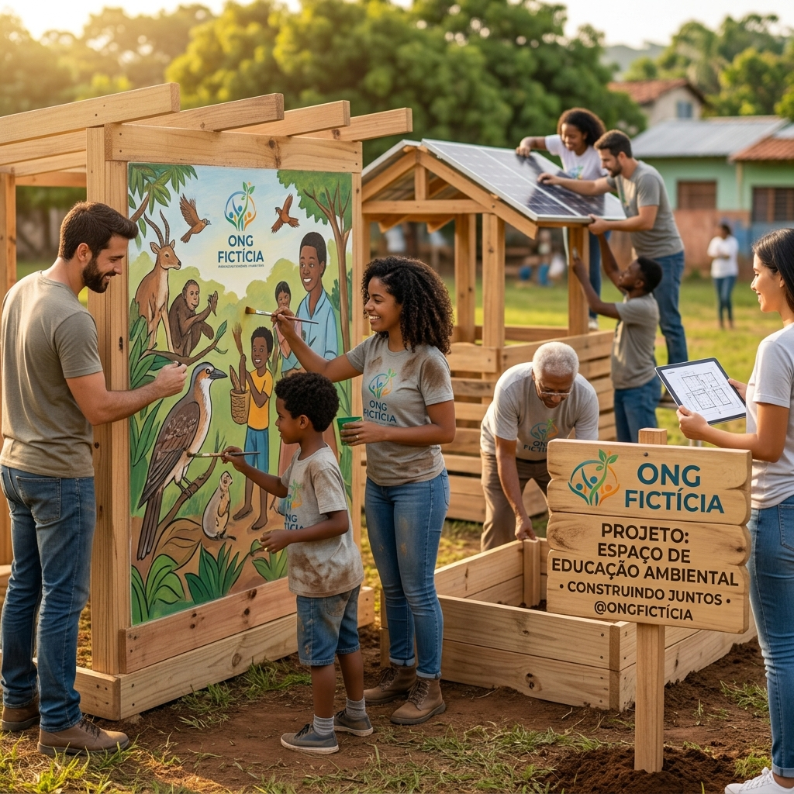
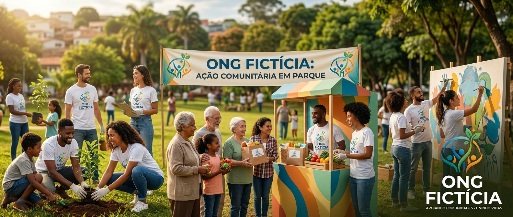
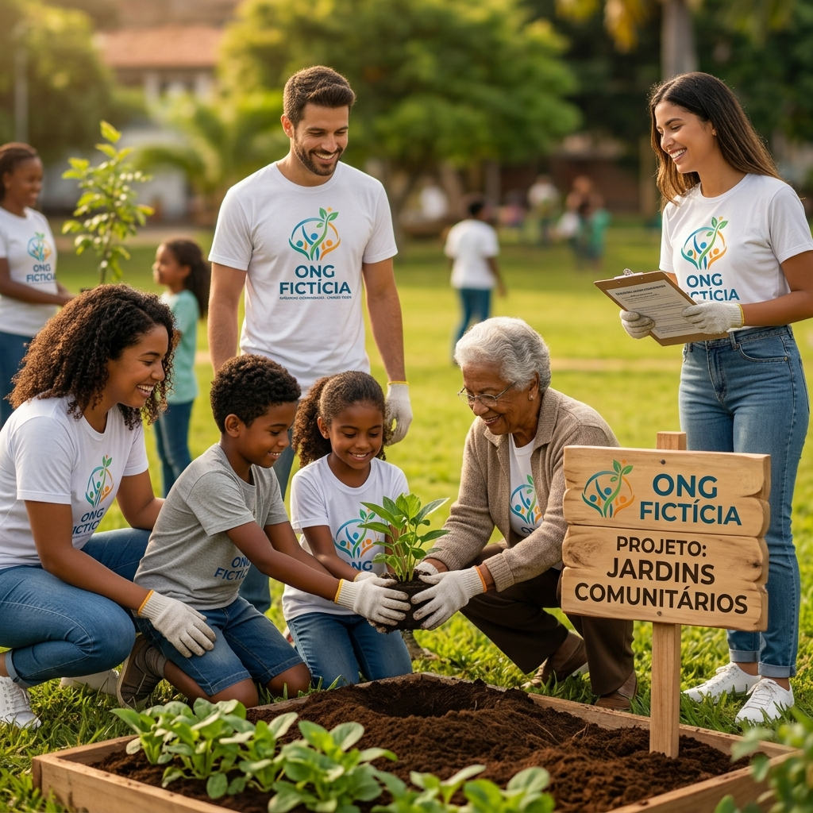

Projeto 1 - Ação Social
O projeto tem como objetivo promover ações sociais voltadas para pessoas em situação de vulnerabilidade, oferecendo apoio e contribuindo para melhorar a qualidade de vida da comunidade.
Ação social
Conheça algumas das iniciativas desenvolvidas pela ONG Fictícia para contribuir com a comunidade.

O projeto tem como objetivo promover ações sociais voltadas para pessoas em situação de vulnerabilidade, oferecendo apoio e contribuindo para melhorar a qualidade de vida da comunidade.
Ação social
A campanha busca arrecadar alimentos, roupas e outros recursos para serem destinados às famílias que mais precisam de ajuda.
Doações